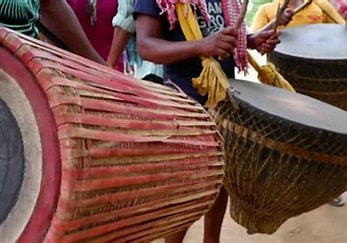

A living heritage, not a costume.
This page gives the fictional retail brand a cultural storytelling layer.

Many communities. Many traditions.
Government sources describe Jharkhand as home to 32 tribes, including communities such as Santhal, Munda, Oraon and Ho. Jharkhand Tourism also highlights traditional music, dance and instruments.
This demo therefore avoids presenting one outfit as “the” tribal dress of Jharkhand.
Traditional dress, thoughtfully presented.
Santhal traditional dress references include Panchi/Futa Kacha styles, while other communities have their own clothing traditions.

Panchi Sari
Documented Santali traditional dress reference.

Lal Pair Weave
Documented Nagpuria traditional cloth reference.

Traditional Dress
Visual reference for Santal attire.

Community Stories
Use real maker/community stories here.

Nagara · Mander · Dhol
Jharkhand Tourism lists Nagara, Dhol/Dholki, Mander, Dhamsa and other instruments aMong the region's traditional music equipment.
Shop instruments →